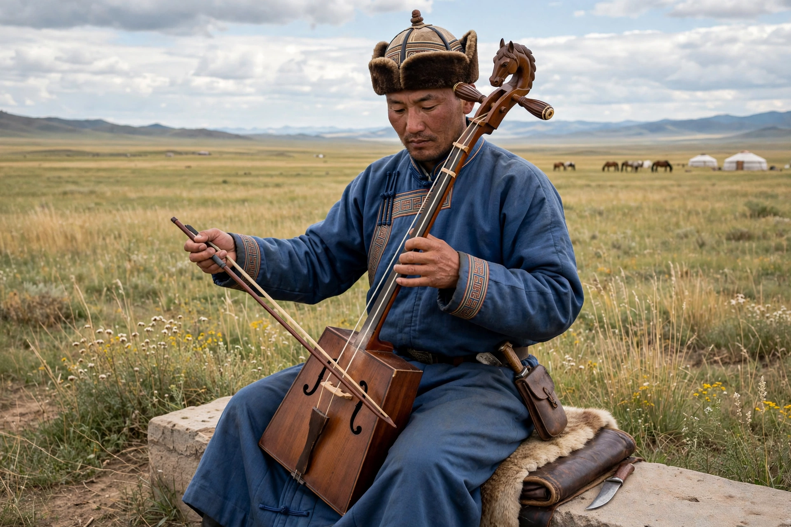

The morin khuur (Mongolian: морин хуур), also known as the horsehead fiddle, is a traditional Mongolian bowed stringed instrument. It is one of the most important musical instruments of the Mongolian people and a symbol of Mongolia, inscribed by UNESCO as a Masterpiece of the Oral and Intangible Heritage of Humanity.

| Morin khuur | |
|---|---|
| Classification | Bowed string instrument |
| Origin | Mongolia |
| Strings | 2 (traditionally horsehair) |
The instrument has a trapezoidal wooden body, two strings traditionally made of horsehair (a "male" string of many hairs and a "female" string of fewer), and a scroll carved in the shape of a horse's head. It is played held upright, with fingernails and fingertips stopping the strings from underneath.
Legends tell of a shepherd who made the first fiddle from the bones and hair of his beloved dead horse. The morin khuur accompanies dances, long songs (urtyn duu), and epic tales, and is said to be able to imitate the sounds of horses and nature.
Standardized in the 20th century for orchestras, it is also used by Mongolian folk-metal bands such as The Hu alongside modern instruments.